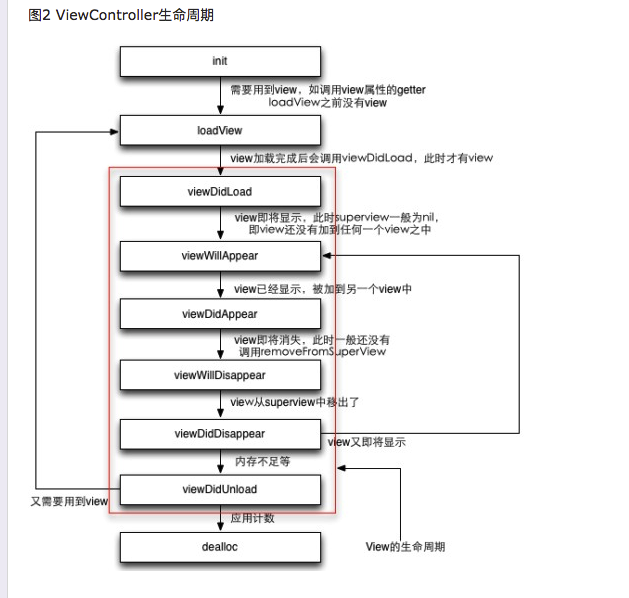

在开发中遇到这样一个问题， viewControllerA向viewControllerB进行切换时，我需要在离开viewControllerA时，关闭全局控制器managerPlayer， 然后进入viewControllerB后，再次开启。返回之后继续进行使用managerPlayer进行视频播放。
因此我需要在 viewWillAppear()
viewWillDisapper()进行设定。
突发好奇，我想整理一下，两个viewController进行切换时，其生命周期的调用情况，以及两者的生命周期在调用时的对应关系。
先发一下打印信息
viewControllerA viewDidLoad()
viewControllerA viewWillAppear()
viewControllerA viewWillLayoutSubviews()
viewControllerA viewDidLayoutSubviews()
viewControllerA viewDidAppear()
此处点击进行controller切换
viewControllerB viewDidLoad()
viewControllerA viewWillDisappear()
viewControllerB viewWillAppear()
viewControllerB viewWillLayoutSubViews()
viewControllerB viewDidLayoutSubviews()
viewControllerA viewDidDisappear()
viewControllerB viewDidAppear()
然后考虑一下对于一个viewController中完整的生命周期

对于整个生命周期的方法进行总结
init 进行整体的初始化
loadView 对于页面中的view进行了初始化,之后可以获取self.view的实例
viewDidLoad此时可以获取view以及其子类view，但是superView还没有。
viewWillAppear view即将显示的节点。每次显示该页面之前都会进入该时间节点 这里的尺寸已经都是实际的了么？
viewDidAppear view已经显示。（被加到另外一个view中）
viewWillDisappear view即将消失 此时还没有调用 removeFromSuperView
viewDidDisappear view已经从superView中移除
viewDidUnload 干啥？
viewController主要负责的职能：
1. 该努力内部view的加载、显示、卸载
2. 负责与其他viewController的通信和协调
注意：
Note: When overriding the loadView method to create your views programmatically, you should not call super. Doing so initiates the default view-loading behavior and usually just wastes CPU cycles. Your own implementation of the loadView method should do all the work that is needed to create a root view and subviews for your view controller.
注意： 如果需要重写loadView方法来创建你的view时，在loadView方法中不应该调用super，如果调用该方法的话可能会影响CPU性能。
loadView与viewDidload的区别是 ，loadView时view还没有生成， viewDidLoad时，view已经生成了。loadView只会被调用一次，但是viewDidLoad可能会被调用多次（view可能多次加载），当view被添加到其他view中之前，会调用viewWillAppear。 当view不再使用时，收到内存警告时，viewController会将view释放并将其指向为nil。